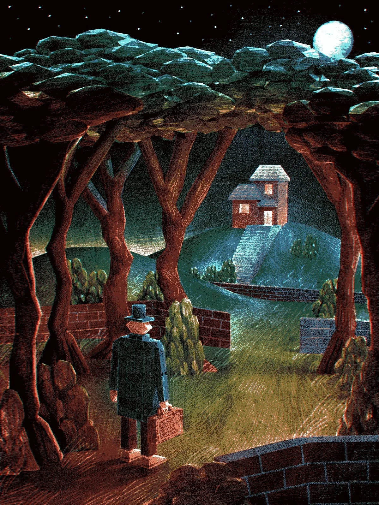

네빌 누들브레인이 서류가방의 경첩을 딸깍 열자, 경첩들이 만족스럽게 한숨을 내쉬었고, 5초 전까지는 존재하지 않았던 반짝이는 디스코 정장이 모습을 드러냈다. 그의 서류가방은 중요한 행사에 무엇이 필요한지 항상 알고 있었다—물론 어제 그의 코트 주머니에 나타난 초대장과는 아무 상관이 없었지만.
[The briefcase hinges sighed with satisfaction as Neville Noodlebrain clicked them open, revealing a glittery disco suit that hadn’t existed five seconds ago. His briefcase always knew what was needed for important occasions—though it had nothing to do with yesterday’s invitation that materialized in his coat pocket.]
그는 여전히 그 순간을 기억할 수 있었다: 장보기 목록을 꺼내려다가 대신 손가락을 따끔거리게 만드는 반짝이는 잉크로 쓰인 쪽지를 발견했던 것을. “자신이 엄청 중요하다고 생각하는 엄청 중요한 사람들을 위한 엄청 중요한 회의에 정중히 초대합니다. 장소: 힐 하우스. 자정. 늦으면 당신은 중요하지 않습니다!” 그 글자들은 가능성으로 반짝였고, 지금도 그의 손가락은 기대감으로 떨리고 있었다.
[He could still remember the moment: reaching for his grocery list and finding instead a note written in glittery ink that made his fingers tingle. “You are cordially invited to the Super Important Meeting for Super Important People Who Think They’re Super Important. Location: Hill House. Midnight. Don’t be late, or you’re not important!” The words had shimmered with possibility, and even now his fingers trembled with anticipation.]
그의 주변에서 그림자들은 달 시장의 달 세금 법안에 대한 장황한 연설로부터 몸을 기울여 피하고 있었다—힐 하우스의 그림자들은 부정직함에 대해 강한 의견을 가지고 있어서, 거짓말을 하는 사람으로부터 가능한 한 멀리 떨어져 모여들곤 했다.
[Around him, shadows leaned away from the Moon-Mayor’s monologue about lunar tax legislation—Hill House shadows had strong opinions about dishonesty and pooled themselves as far as possible from anyone fibbing.]
“제가 말씀드리고 있었듯이,” 달 시장이 엄숙하게 말했다. 그의 치즈 냄새가 나는 위엄이 공격적인 유제품 광고처럼 방 전체에 퍼져나갔다. “제 선거구의 분화구들이 요구하는 바는—”
[“As I was saying,” the Moon-Mayor intoned, his cheese-scented importance wafting across the room like an aggressive dairy advertisement, “the craters of my constituency demand—”]
“중요하게!” 윌마 와키팬츠가 비명을 지르며 손가락을 하늘로 향해 너무 빠르게 가리켜서 그녀의 보라색 머리카락이 떨렸다. 각 머리카락 한 올 한 올이 중력에 대해 각자의 의견을 가지고 있는 것 같았다. “우리는 당신의 달 전례를 들으러 온 게 아니에요, 맥문페이스 시장님. 우리는 피자 때문에 온 거라고요! 그리고 맞아요, 저는 여러분께 하루밖에 시간을 안 줬어요—즉흥성을 중요하게 중요하거든요!”
[“Importantly!” Wilma Wackypants shrieked, pointing her finger skyward with such velocity that her purple hair quivered. Each strand seemed to have its own opinion about gravity. “We’re not here for your lunar liturgy, Mayor McMoonface. We’re here for the pizza! And yes, I only gave you all one day’s notice—spontaneity is importantly important!”]
마루판이 완벽한 B플랫으로 삐걱거렸다—힐 하우스는 정직함에 대해서도 독특한 의견을 가지고 있어서, 누군가 거짓말을 할 때마다 음악적으로 표현했다. 달 시장의 얼굴이 약간 빨갛게 달아올랐다; 아마도 그의 달 선거구가 그가 주장했던 만큼 요구사항이 많지는 않았던 모양이다.
[The floorboards creaked in perfect B-flat—Hill House had peculiar opinions about honesty too, and expressed them musically whenever someone fibbed. The Moon-Mayor’s face reddened slightly; perhaps his lunar constituency wasn’t quite as demanding as he’d claimed.]
“저는 그 달의 시장이라고 주장한 적이 없습니다,” 그가 코트를 정리하며 코웃음을 쳤다. 코트에서는 연한 녹색 치즈와 선거 공약 냄새가 났다. “제 달은 반시계방향으로 공전합니다, 고맙게도. 거기서는 민주주의의 조류가 다르게 흐르거든요.”
[“I’ve never claimed to be mayor of that moon,” he huffed, adjusting his cape, which smelled faintly of green cheese and campaign promises. “Mine orbits counter-clockwise, thank you very much. The tides of democracy flow differently there.”]
마임이 보이지 않는 손가락을 조급하게 딱딱 튕겼고, 그의 침묵은 어떻게든 말보다 더 시끄러웠다. 그는 하지 못한 말들 냄새가 났다—새 종이와 놓친 기회 사이 어딘가의 향기였다. 그 옆에서 한 노인이 미친 듯이 종이접기를 하고 있었고, 그의 손가락들이 여러 형태들을 춤추듯 만들어내고 있었다.
[The mime snapped invisible fingers impatiently, his silence somehow louder than words. He smelled like unspoken words—a scent somewhere between fresh paper and missed opportunities. Beside him, an elderly man frantically folded origami, his fingers dancing through configurations.]
“버트램이 배가 고프다고 하네요,” 윌마가 종이학이 위장으로, 그다음 시계로 변하는 것을 보며 통역했다. “그리고 시간이 중요하게 낭비되고 있다고요!”
[“Bertram says he’s famished,” Wilma translated, watching the paper crane transform into a stomach, then a clock. “And that time is importantly wasting!”]
“어떻게 당신이—” 네빌이 말을 시작했다.
[“How do you—” Neville began.]
“종이접기는 팔꿈치로 듣는 사람들에게 말을 걸어요,” 윌마가 이것이 모든 걸 명확히 해준다는 듯이 설명했다. “중요하게!”
[“Origami speaks to those who listen with their elbows,” Wilma explained, as if this clarified everything. “Importantly!”]
“레시피는,” 그녀가 자체적인 온기로 빛나는 것 같은 종이를 꺼내며 발표했다, “가장 중요하게 중요하다는 걸 증명하는 사람의 것이에요!”
[“The recipe,” she announced, producing a paper that seemed to glow with its own warmth, “belongs to whoever proves most importantly important!”]
그녀가 종이를 가슴에 꼭 안았고, 네빌은 그녀가 “중요하게"라고 말할 때마다—그 말이 자주 나오곤 했는데—왼쪽 눈이 경련하는 것을 알아챘다. 벽의 물방울무늬들이 또 다른 피자 향기의 파도를 내뿜어서, 모든 사람의 배가 3부 화음으로 꼬르륵거렸다. 심지어 그림자들도 갑자기 관심을 보이며 방 중앙으로 다시 기울어지는 것 같았다.
[She clutched the paper to her chest, and Neville noticed how her left eye twitched whenever she said "importantly"—which was often. The walls’ polka dots released another wave of pizza scent, making everyone’s stomachs growl in three-part harmony. Even the shadows seemed to lean back toward the center of the room, suddenly interested.]
“이 레시피를 제가 만들었어요,” 윌마가 말을 이으며 목소리를 낮추었다. 그 속삭임은 마치 친근한 용이 내뿜는 연기처럼 방 안 가득 퍼졌다. 배고픔이 너무나도 거대하고, 우주적이며, 정말정말 중요해져서 거의—” 그녀는 잠시 멈추고, 마치 크림을 맛보는 고양이처럼 그 드라마를 음미했다. “—세상을 파괴할 뻔했어요.”
["I created this recipe,” Wilma continued, her voice dropping to a whisper that filled the room like smoke from a friendly dragon, “on the day my hunger grew so vast, so cosmic, so importantly important that I nearly—” She paused, savoring the drama like a cat with cream. “—destroyed the world.”]
마루판은 조용했다. 심지어 달 시장의 망토도 바스락거리는 것을 멈췄다.
[The floorboards remained silent. Even the Moon-Mayor’s cape stopped rustling.]
“대신에,” 그녀가 킥킥거렸다, “저는 그 끝없는 배고픔을 창조로 승화시켰어요! 이것으로!” 그녀가 따뜻한 종이를 흔들자, 별처럼 작은 반짝이는 빛들이 떨어졌다. “너무나 초월적이고, 너무나 중요하게 맛있는 피자라서, 맛본 사람들은 정확히 3분 동안 말을 할 수 없고, 맛의 명상에 빠져버려요!”
[“Instead,” she cackled, “I channeled that bottomless hunger into creation! Into this!” She waved the warm paper, and tiny sparkles of light fell from it like stars. “A pizza so transcendent, so importantly delicious, that those who taste it cannot speak for three entire minutes, lost in flavor meditation!”]
“정확히 3분이요?” 달 시장이 의심스럽게 물었다. “지구 시간으로 3분인가요, 아니면 달 시간으로 3분인가요?”
[“Three minutes exactly?” the Moon-Mayor asked skeptically. “In Earth minutes or lunar minutes?”]
“중요하게 지구 시간으로요!” 윌마의 눈이 두 번 경련했다. “하지만 여기 함정이 있어요—이 레시피는 마음이 순수한 사람만 받아들여요. 쓴 마음을 가진 자는 태우고, 거짓된 자는 얼리고, 폭력적으로 허영심 많은 자에게서는 그냥 사라져버려요.”
[“Importantly Earth minutes!” Wilma’s eye twitched twice. “But here’s the catch—the recipe only accepts those pure of heart. It burns the bitter, freezes the false, and simply vanishes from the violently vain.”]
버트램이 더 빠르게 접기 시작했다—물음표, 그다음 치켜올린 눈썹, 그다음 점수판을 들고 있는 심판 같은 것.
[Bertram folded faster—a question mark, then a raised eyebrow, then what might have been a judge holding up a scorecard.]
“오!” 윌마가 손뼉을 치며, 그녀의 눈이 혼돈스러운 영감으로 빛났다. “그거예요! 댄스 배틀을 해요! 중요하게!”
[“Oh!” Wilma clapped, her eyes lighting up with chaotic inspiration. “That’s it! We’ll have a dance-off! Importantly!”]
버트램의 손가락이 접는 중간에 멈췄다가, 광란의 활동으로 폭발했다—놀란 고양이에서 다리를 벌리고 있는 물음표, 그리고 확실히 작은 종이 실크햇을 쓴 엄지척까지 이어지는 일련의 모양들을 만들어냈다.
[Bertram’s fingers paused mid-fold, then erupted into frantic activity—producing a series of shapes that progressed from a startled cat to a question mark doing the splits to what was definitely a thumbs-up wearing a tiny paper top hat.]
“댄스 배틀이라고요?” 달 시장의 목소리가 한 옥타브 올라갔다. “그건 말도 안 돼요! 저는 투표나, 정식 위원회나, 최소한 달 국민투표라도 요구합니다—”
[“A dance-off?” The Moon-Mayor’s voice climbed an octave. “That’s absurd! I demand a vote, or a formal committee, or at least a lunar referendum—”]
“댄스로 결정하죠!” 윌마의 미소가 기쁨은 이해하지만 치과학은 이해하지 못하는 누군가가 배열한 것 같은 이빨들을 드러냈다. “가장 중요한 중요하지 않음으로 춤추는 사람이 이기는 거예요!”
[“Dancing it is!” Wilma’s grin revealed teeth that seemed to have been arranged by someone who understood joy but not dentistry. “Whoever dances with the most important unimportance wins!”]
마임이 스트레칭을 시작했고, 그의 움직임은 그가 갖지 못한 근육들의 착각을 만들어냈다. 달 시장이 부풀어 올랐고, 그의 망토가 인위적인 자신감으로 펄럭였다. “제가 중요하게 중요한 걸 보여드리겠어요! 저는 인공위성과 왈츠를 췄고! 소행성 지대를 통과하며 탱고를 췄다고요!”
[The mime began stretching, his movements creating the illusion of muscles he didn’t possess. The Moon-Mayor puffed up, his cape billowing with artificial confidence. “I’ll show you importantly important! I’ve waltzed with satellites! I’ve tangoed through asteroid fields!”]
B플랫. B플랫. B플랫. 마루판들이 음악적 축제를 벌이고 있었다.
[B-flat. B-flat. B-flat. The floorboards were having a musical field day.]
그 뒤에 일어난 것은 움직임의 대학살이었다. 달 시장의 달 왈츠는 보이지 않는 달 중력과 싸우면서 보이지 않는 달 바위를 밟고 있는 남자처럼 보였다. 그의 발들은 서로 다른 자리에 선출되어 함께 일하기를 거부하는 것처럼 움직였다. “보세요!” 그가 헐떡거렸다, “우주 내각 셔플!”
[What followed was a massacre of movement. The Moon-Mayor’s lunar waltz looked like a man fighting invisible moon gravity while stepping on invisible moon rocks. His feet moved as if they’d been elected to different positions and refused to work together. “Behold!” he wheezed, “The Cosmic Cabinet Shuffle!”]
마임의 해석적 춤은 주로 관절 문제와 자유롭게 놓아주지 못하는 무능력을 해석했다. 그의 보이지 않는 상자 루틴은 비극적으로 문자 그대로가 되었다—그는 자신의 중요함 속에 스스로를 가둬버렸다. 심지어 버트램도 시도했는데, 그의 종이들이 광란적으로 댄서들로 접혔다가 자신들의 종이접기 위엄의 무게에 무너져버렸다.
[The mime’s interpretative dance interpreted mainly joint problems and an inability to let loose. His invisible box routine became tragically literal—he’d trapped himself in his own importance. Even Bertram tried, his papers folding frantically into dancers that crumbled under the weight of their own origami dignity.]
그때 네빌이 춤을 췄다.
[Then Neville danced.]
그의 디스코 정장이 매번 회전할 때마다 비밀들을 속삭였다—"왼발도 감정이 있다"와 “리듬은 선택사항이다” 같은 비밀들을. 그의 팔들이 너무 익힌 스파게티의 열정으로 휘둘렸다. 그의 다리들은 중력과 서로 간에 논쟁을 벌이고 있는 것 같았다. 하지만 놀라운 일이 일어났다: 방의 물방울무늬들이 그의 움직임에 맞춰 맥박치기 시작했고, 그림자들이 흔들리기 시작했으며, 심지어 먼지 입자들까지 작은 디스코 볼들로 정렬했다.
[His disco suit whispered secrets with every gyration—secrets like “left feet have feelings too” and “rhythm is optional.” His arms flailed with the enthusiasm of overcooked spaghetti. His legs appeared to be having an argument with both gravity and each other. But something extraordinary happened: the room’s polka dots began to pulse with his movements, the shadows started swaying, and even the dust motes aligned themselves into tiny disco balls.]
그는 아무도 보고 있지 않다는 듯이 춤을 췄는데, 중요하게도, 그는 누군가 보고 있다는 걸 잊어버렸기 때문이었다. 순수하고 희석되지 않은 기쁨이 잘못 계산된 모든 발걸음, 박자에 맞지 않는 모든 엉덩이 흔들기, 빛을 받아 기쁨으로 만든 색종이조각처럼 흩뿌리는 모든 스팽글에서 발산되었다.
[He danced like nobody was watching because, importantly, he’d forgotten anyone was. Pure, undiluted joy radiated from every miscalculated step, every off-beat hip thrust, every sequin that caught the light and scattered it like confetti made of joy.]
윌마의 손에 있던 레시피가 온기로 맥박치기 시작했고, 햇빛을 향한 식물처럼 네빌을 향해 뻗어나갔다. 종이가 실제로 윙윙거렸다—만족한 오븐들과 행복한 식탁들 같은 소리였다.
[The recipe in Wilma’s hand began to pulse with warmth, reaching toward Neville like a plant toward sunlight. The paper actually hummed—a sound like satisfied ovens and happy dinner tables.]
“중요하게!” 윌마가 숨을 헐떡이며, 레시피가 거의 네빌의 땀에 젖은 손바닥으로 뛰어들면서 웃음의 눈물이 그녀의 얼굴을 타고 흘렀다. “그것이 당신을 선택해요! 너무나 중요하게 중요하지 않아서 기쁨이 그냥… 일어나는 사람을!”
[“Importantly!” Wilma gasped, tears of laughter streaming down her face as the recipe practically leaped into Neville’s sweaty palm. “It chooses you! Someone so importantly unimportant that joy just… happens!”]
달 시장이 셔플 중간에 멈춰서 얼굴이 부드러워졌다. “고요의 바다에 맹세코,” 그가 중얼거렸다, “언제부터 그냥… 춤추는 법을 잊어버렸을까?”
[The Moon-Mayor stopped mid-shuffle, his face softening. “By the seas of tranquility,” he murmured, “when did I forget how to just… dance?”]
마임이 가슴에 손을 얹고, 그다음 진심으로 박수를 치기 시작했다—마침내 자유로워진 말들 냄새가 나는 진짜, 들리는 박수를. 버트램이 작은 종이 하트를 접었고, 또 하나, 또 하나, 종이접기 하트들이 여전히 회전하고 있는 네빌의 모습 주위로 눈처럼 떨어질 때까지.
[The mime placed a hand over his heart, then began genuinely applauding—with real, audible claps that smelled like words finally set free. Bertram folded a tiny paper heart, then another, then another, until origami hearts fell like snow around Neville’s still-gyrating form.]
레시피가 작은 심장박동처럼 네빌의 피부에 진동했다. 그것을 들고 있자, 그의 기억 속에서 무언가가 꿈틀거렸다—어머니의 부엌, 손가락 사이로 느껴지던 반죽의 감촉, 세상이 그에게 무언가를 잘하지 못한다고 말하기 전에 어머니를 도와 요리하며 흥얼거렸던 노래들.
[The recipe thrummed against Neville’s skin like a tiny heartbeat. As he held it, something stirred in his memory—his mother’s kitchen, the way dough felt between his fingers, the songs he’d hummed while helping her cook before the world told him he wasn’t good at things.]
“나눠주실 건가요?” 달 시장이 조용히 물었다. 그의 달 허세가 꺼져있었다. “피자 말이에요. 만드시게 되면요?”
[“Will you share?” the Moon-Mayor asked quietly, his lunar bluster deflated. “The pizza, I mean. When you make it?”]
“중요하게 그럼요!” 네빌이 여전히 약간 숨이 차면서도 환하게 웃었다. “모든 분이 초대받으셨어요. 맥문페이스 시장님도요.”
[“Importantly yes!” Neville beamed, still slightly out of breath. “Everyone’s invited. Even you, Mayor McMoonface.”]
“사실은 문바텀 시장입니다,” 그 남자가 인정했다. 마루판은 조용했다. “제럴드 문바텀이에요. 저는… 맥문페이스 부분은 제가 지어낸 거예요.”
[“It’s actually Mayor Moonbottom,” the man admitted. The floorboards remained silent. “Gerald Moonbottom. I… I made up the McMoonface part.”]
그날부터 네빌 누들브레인은 그의 마법 서류가방이 항상 알고 있던 것을 발견했다—그는 줄곧 뛰어난 요리사였고, 단지 시도할 자신감을 기다리고 있었을 뿐이었다. 그는 3분 동안 조용히 앉아 기쁨 그 자체의 중요하게 중요한 맛에 빠져들 만큼 배고픈 누구와든 자신의 전설적인 피자를 나눴다.
[From that day forward, Neville Noodlebrain discovered what his magical briefcase had always known—he’d been a brilliant chef all along, just waiting for the confidence to try. He shared his legendary pizzas with anyone hungry enough to sit in silence for three minutes, lost in the importantly important flavor of joy itself.]
그리고 화요일 밤마다, 가능성의 냄새가 나는 물방울무늬로 칠해진 벽의 그의 피자집에서 특이한 무리가 모였다: 한 입 먹을 때마다 “중요하게!"라고 소리치는 마녀, 열정적으로 서툴게 춤추는 법을 배운 전직 가짜 달 시장, 한 입 먹을 때마다 들리는 기쁨으로 박수치는 마임, 그리고 손에 닿는 어떤 종이든지 기쁨으로 조각하는 종이접기 대가.
[And on Tuesday nights, in his pizzeria with walls painted in polka dots that smelled of possibilities, a peculiar group gathered: a witch who shrieked "Importantly!” between bites, a former fake moon mayor who’d learned to dance badly with enthusiasm, a mime who clapped with audible delight between bites, and an origami master who sculpted joy from whatever paper was handy.]
카운터 뒤에 안전하게 자리잡은 서류가방은 만족스럽게 한숨을 쉬며 가끔씩 필요한 것을 정확히 만들어냈다: 여분의 밀가루, 완벽한 토마토, 또는 특별히 중요한 피자 행사를 위한 또 다른 디스코 정장을.
[The briefcase, tucked safely behind the counter, sighed with satisfaction and occasionally produced exactly what was needed: extra flour, perfect tomatoes, or another disco suit for particularly important pizza occasions.]